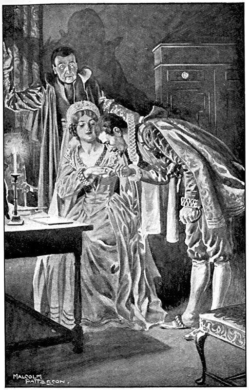

Екатерина не ошиблась в своих догадках: Генрих не изменил прежних привычек и каждый вечер отправлялся к мадам де Сов. Сначала эти посещения совершались в большой тайне, но мало-помалу осмотрительность его ослабла, он перестал принимать меры предосторожности, и благодаря этому Екатерине нетрудно было убедиться в том, что Маргарита лишь называлась королевою Наваррской, а в действительности ею была мадам де Сов.
В начале нашего повествования мы только обмолвились двумя словами о покоях мадам де Сов, но дверь, тогда открытая Дариолой королю Наваррскому, захлопнулась за ним так плотно, что место таинственных любовных свиданий пылкого Беарнца осталось нам неведомо.
Эти покои относились к тому разряду помещений, какие королевские особы отводят во дворце своим придворным, обязанным быть тут же, под рукой; они были, конечно, гораздо меньше и не так удобны, как собственные квартиры в городе. Покои мадам де Сов находились, как было сказано, в третьем этаже, почти над комнатами Генриха, и дверь из них выходила в коридор, освещенный в дальнем конце старинным окном с мелкими окончинами в свинцовом переплете, пропускавшими лишь тусклый свет даже в самый ясный день. Зимою же после трех часов дня необходимо было зажигать лампу; но в лампу наливали масла столько же, сколько летом, и к десяти часам вечера она гасла, обеспечивая двум влюбленным наибольшую безопасность их свиданий в это время года.
Маленькая передняя, обитая шелком с большими желтыми цветами, приемная, затянутая синим бархатом, и наконец спальня, а в ней кровать с витыми колонками и вишневым атласным пологом, отделенная от стены узким проходом, где стояло зеркало в серебряной оправе и висели две картины, изображавшие любовь Венеры и Адониса, вот и все покои – теперь бы сказали «гнездышко» – очаровательной придворной дамы из свиты королевы Екатерины Медичи.
Если поискать внимательнее, то в темном углу, напротив туалета со всеми принадлежностями, можно было найти маленькую дверцу, которая вела в своего рода молельню, где на помосте в две ступени стоял молитвенный, особой формы, аналой. Здесь на стенах висели три-четыре картинки духовно-возвышенного содержания, как бы в противовес любовно-мифологическим картинам, украшавшим спальню. Между картинами висело на золоченых гвоздиках женское оружие, так как и женщины в те времена тайных козней носили при себе оружие, а случалось, что и владели им не хуже, чем мужчины.
Вечером, на следующий день после описанных событий у мэтра Рене, мадам де Сов сидела у себя в спальне на диванчике и говорила Генриху Наваррскому о своей любви к нему и о своих страхах за него, доказывая и свою любовь, и свои страхи той преданностью, какую она обнаружила к нему в ночь, последовавшую за Варфоломеевской, то есть в ночь, когда Генрих ночевал у своей жены.
Генрих не скупился на выражения своей признательности. Мадам де Сов в простом батистовом пеньюаре была особенно очаровательна, а Генрих был особенно признателен. В такой обстановке Генрих, действительно влюбленный, размечтался. А мадам де Сов всем сердцем отдавалась любви, начавшейся по приказанию королевы-матери, и теперь подолгу вглядывалась в Генриха, чтоб уловить, насколько совпадало выражение его глаз с его словами.
– Слушайте, Генрих, – говорила мадам де Сов, – скажите откровенно: в ту ночь, когда вы спали в кабинете ее величества королевы Наваррской, а в ногах у вас спал Ла Моль, вы не жалели о том, что этот достойный дворянин лежал преградой между вами и спальней королевы?
– Да, моя крошка, – ответил Генрих, – так как я должен был неизбежно пройти через ее спальню, чтобы попасть в ту комнату, где мне так хорошо и где в эту минуту я так счастлив.
Мадам де Сов улыбнулась.
– А после вы туда ходили?
– И всякий раз я вам об этом говорил.
– И не пойдете туда, не сказав мне?
– Никогда.
– Поклянитесь.
– Поклялся бы, будь я гугенот, но…
– Но что?
– Но в данное время я изучаю догматы католической веры, а она учит, что не надо клясться никогда.
– Хитрец! – сказала мадам де Сов, покачивая головой.
– Шарлотта, а если бы я стал вас так расспрашивать, вы бы ответили на мои вопросы?
– Конечно, – ответила мадам де Сов. – Мне нечего скрывать от вас.
– Тогда объясните мне, как произошло, что, оказав мне отчаянное сопротивление до моей женитьбы, вы после нее перестали быть жестокой по отношению ко мне, беарнскому увальню, смешному провинциалу, к государю настолько бедному, что он не может придать драгоценностям своей короны должный блеск?
– Генрих, вы требуете от меня разрешения загадки, которую в течение трех тысяч лет не могут разгадать философы всех стран. Никогда не спрашивайте у женщины, за что она вас любит; довольствуйтесь вопросом: «Любите ли вы меня?»
– Любите ли вы меня, Шарлотта?
– Люблю, – ответила мадам де Сов с обаятельной улыбкой, кладя свою красивую руку на руку возлюбленного.
Генрих сжал ее руку в своей руке.
– А что, если бы разгадку, которую так тщетно ищут все философы в течение трех тысяч лет, я нашел, по крайней мере в отношении вас, Шарлотта?
Мадам де Сов покраснела.
– Вы меня любите, – продолжал Генрих, – следовательно, мне больше нечего просить у вас, и я считаю себя самым счастливым человеком на земле. Но вы знаете – во всяком счастье всегда чего-то не хватает. Даже Адам среди райского блаженства не чувствовал себя вполне счастливым и вкусил от злосчастного яблока, наградившего всех нас потребностью все знать, а поэтому в течение всей нашей жизни мы ищем то, что нам еще неведомо. Скажите, моя крошка, не было ли сначала так, что королева Екатерина приказала вам любить меня?
– Генрих, говорите тише, когда вы говорите о королеве-матери, – заметила мадам де Сов.
– О-о! – воскликнул Генрих с такой непринужденностью, с такой свободой, что обманул даже мадам де Сов. – Было время, когда мне приходилось остерегаться этой доброй матери, когда мы не могли поладить, но теперь я муж ее дочери…
– Муж королевы Маргариты? – спросила Шарлотта, покраснев от ревности.
– Лучше вы говорите тише, – сказал Генрих. – Теперь, когда я муж ее дочери, мы с королевой-матерью – лучшие друзья. Чего хотели от меня? Чтобы я стал католиком – по-видимому, так. Очень хорошо, благодать меня коснулась, и предстательством святого Варфоломея я стал католиком. Теперь мы живем по-семейному, как хорошие братья, как добрые христиане.
– А королева Маргарита?
– Королева Маргарита? Что ж, она-то и является для всех нас связующим звеном.
– Но вы мне говорили, Генрих, что королева Наваррская в награду за мою преданность, проявленную к ней тогда, поступила великодушно по отношению ко мне. Если вы мне сказали правду, если королева Маргарита великодушна ко мне, за что я очень ей признательна, и великодушна на самом деле, тогда она – только условное звено, которое нетрудно разорвать. И вам не удержаться за него, потому что мнимой близостью с королевой вам никого не провести.
– Однако я держусь и езжу на этом коньке уже три месяца.
– Значит, вы обманули меня! – воскликнула мадам де Сов. – Королева Маргарита ваша жена по-настоящему!
Генрих улыбнулся.
– Слушайте, Генрих, эти ваши улыбки выводят меня из себя до такой степени, что хотя вы и король, но иногда у меня является жестокое желание выцарапать вам глаза.
– Значит, мне удается провести кое-кого этой мнимой близостью, если бывают такие случаи, когда вам хочется выцарапать мне глаза, хотя я и король, – следовательно, и вы верите, что эта близость существует.
– Генрих, Генрих! Мне думается, что сам господь бог не знает ваших мыслей! – сказала мадам де Сов.
– Я мыслю, моя крошка, так, – сказал Генрих. – Сначала Екатерина приказала вам меня любить, потом в вас заговорило чувство, и теперь, когда начинают говорить оба эти голоса, вы прислушиваетесь к голосу лишь своего сердца. Я вас тоже люблю от всей души, и вот поэтому, если бы у меня и были тайны, я не поверил бы их вам из страха как-нибудь запутать вас… ведь дружба королевы-матери ненадежна – это дружба тещи.
Совсем не это требовалось Шарлотте: каждый раз, когда она пыталась проникнуть в бездны души возлюбленного, между ними опускалась какая-то толстая завеса и тотчас становилась для Шарлотты непроницаемой стеной, отделявшей их друг от друга. Она почувствовала, что у нее слезы набегают на глаза от его ответа, и, услышав звон колокола, пробившего десять часов, сказала Генриху:
– Сир, время спать, мне завтра надо очень рано приступить к моим обязанностям у королевы-матери.
– На сегодняшний вечер вы изгоняете меня, моя крошка? – спросил Генрих.
– Генрих, мне грустно. А в грусти я покажусь вам скучной, вы перестанете меня любить. Поймите, что будет лучше, если вы уйдете.
– Хорошо! Раз вы хотите этого, Шарлотта, я уйду, но – святая пятница! – окажите мне милость и разрешите присутствовать при вашем переодевании!
– А как же королева Маргарита, сир? Неужели вы заставите ее ждать, пока я переоденусь?
– Шарлотта, – серьезным тоном сказал Генрих, – у нас было условие никогда не говорить о королеве Наваррской, а сегодня мы говорили о ней чуть ли не весь вечер.
Мадам де Сов вздохнула и села за туалетный столик. Генрих взял стул, пододвинул его к своей возлюбленной, стал коленом на сиденье и облокотился на спинку своего стула.
– Ну вот, милочка моя Шарлотта, – сказал Генрих, – теперь мне видно, как вы наводите красу, притом для меня, что бы вы там ни говорили. Боже мой! Сколько всяких вещей, сколько баночек с душистыми притираниями, сколько пакетиков с пудрой, сколько флаконов, сколько коробочек с помадой!
– Это только кажется, что много, – со вздохом ответила Шарлотта, – а на самом деле очень мало; оказывается, и этого все же недостаточно, чтобы царить одной в сердце вашего величества.
– Послушайте! Не будем возвращаться в область политики, – сказал Генрих. – Что это за тоненькая маленькая кисточка? Не для того ли, чтобы подводить брови моей богине?
– Да, сир, – с улыбкой ответила мадам де Сов, – вы сразу угадали.
– А этот гребешок слоновой кости?
– Делать пробор.
– А эта прелестная серебряная коробочка с чеканной крышечкой?
– О, это Рене прислал мне свой замечательный опиат; он уж давно сулился изготовить средство для смягчения моих губ, хотя вы, ваше величество, благоволите находить их иногда достаточно мягкими и так.
Тогда Генрих, все больше развеселяясь, по мере того как разговор вступал в область женского кокетства, нагнулся и, как бы в подтверждение слов, сказанных очаровательной женщиной, поцеловал ее в губы, которые она с большим вниманием разглядывала в зеркало.
Шарлотта протянула было руку к серебряной коробочке, служившей предметом разговора, желая, вероятно, показать Генриху, как нужно накладывать на губы эту красную помаду, как вдруг короткий стук в дверь заставил обоих влюбленных вздрогнуть.
– Мадам, кто-то стучится, – сказала Дариола, высовывая голову из-за портьеры.
– Узнай – кто и приди сказать, – ответила мадам де Сов.
Генрих и Шарлотта с тревогой переглянулись. Генрих уже собрался скрыться в молельню, где он не раз находил себе убежище, как появилась Дариола.
– Мадам, это парфюмер, мэтр Рене.
При этом имени Генрих нахмурился и невольно закусил губы.
– Если хотите, я откажусь его принять, – сказала мадам де Сов.
– Нет, нет! – ответил Генрих. – Мэтр Рене никогда не делает ничего, не продумав заранее своих действий, и если он пришел к вам, значит, у него есть основания для этого.
– Может быть, тогда вы спрячетесь?
– Не стану этого делать, – ответил Генрих, – потому что мэтр Рене имеет сведения обо всем, и мэтр Рене отлично знает, что я здесь.
– Но у вашего величества могут быть причины чувствовать себя неприятно в его обществе.
– У меня? Никаких! – ответил Генрих, делая над собой усилие, которое при всем самообладании он все же не смог скрыть совсем. – Правда, отношения у нас были прохладные, но с вечера святого Варфоломея они наладились.
– Впусти! – сказала Дариоле мадам де Сов.
Через минуту вошел Рене и одним взглядом осмотрел всю комнату.
Мадам де Сов продолжала сидеть перед туалетным столиком. Генрих Наваррский вернулся на диванчик. Шарлотта сидела на свету, Генрих – в полутьме.
– Мадам, я явился принести вам свои извинения, – почтительно, но непринужденно сказал Рене.
– А в чем, Рене? – спросила мадам де Сов с особой мягкой снисходительностью, свойственной хорошеньким женщинам по отношению к тому разряду своих поставщиков, которые способствуют их красоте.
– В том, что я давно уже обещал вам потрудиться для ваших красивых губок, а между тем…
– Сдержали ваше обещание только сегодня, да? – спросила мадам де Сов.
– Только сегодня? – удивленно повторил Рене.
– Да, я получила эту коробочку только сегодня, да и то вечером.
– Ах да, – произнес Рене с каким-то странным выражением лица, глядя на коробочку, стоявшую на столике перед мадам де Сов и совершенно похожую на те, какие у него остались в лавке. «Я так и думал!» – прошептал он про себя. – А вы уже пробовали мой опиат? – спросил он вслух.
– Нет еще; я только собиралась попробовать его, как вы вошли.
На лице Рене появилось выражение раздумья, не ускользнувшее от Генриха, от которого, впрочем, мало что ускользало.
– Ну, Рене, что с вами? – спросил король Наваррский.
– Со мной, сир? Ничего, – ответил парфюмер, – я смиренно жду, ваше величество, не скажете ли вы мне что-нибудь до моего ухода.
– Бросьте! – улыбаясь, сказал Генрих. – Разве вы и без моих слов не знаете, что я с удовольствием встречаюсь с вами?
Рене посмотрел вокруг себя, прошелся по комнате, как будто проверяя зрением и слухом все двери и обивку стен, потом стал так, чтобы видеть одновременно мадам де Сов и Генриха.
– Нет, я этого не знаю, – ответил он.
Изумительный инстинкт Генриха Наваррского, подобный какому-то шестому чувству и руководивший им всю первую половину его жизни среди ее опасностей, подсказал Беарнцу, что сейчас в уме Рене происходит нечто необычное, похожее на какую-то борьбу, и Генрих, обернувшись к парфюмеру, стоявшему на свету, тогда как Генрих оставался в полутьме, сказал Рене:
– Почему вы здесь в эти часы?
– Разве я имел несчастье потревожить ваше величество? – ответил парфюмер, делая шаг назад.
– Совсем нет. Мне только хотелось знать одну вещь.
– Какую, сир?
– Рассчитывали вы застать меня здесь?
– Я был уверен в этом.
– Значит, вы меня искали?
– Во всяком случае, я очень счастлив с вами встретиться.
– Вам надо что-нибудь сказать мне?
– Быть может, сир! – ответил Рене.
Шарлотта покраснела от страха – как бы парфюмер, видимо, собираясь сделать какое-то разоблачение, не коснулся ее прежнего поведения в отношении Генриха; сделав вид, что всецело занята своим туалетом и ничего не слышит, она раскрыла коробочку с опиатом и, прерывая их разговор, воскликнула:
– Ах, Рене, поистине вы чародей! У этой помады чудесный цвет, и я хочу, из уважения к вам, попробовать при вас ваше произведение.
Она взяла коробочку и кончиком пальца захватила немного красноватой мази, чтобы намазать ею губы. Рене вздрогнул.
Баронесса с улыбкой поднесла палец к губам.
Рене побледнел.
Генрих Наваррский, сидевший по-прежнему в полумраке, следил за всем происходящим жадным, напряженным взором, не упустив ни движения мадам де Сов, ни трепета Рене.
Пальчик Шарлотты почти коснулся губ, как вдруг Рене схватил ее за руку; в то же мгновение вскочил и Генрих, чтобы ее остановить, но тотчас бесшумно опустился на диванчик.
– Мадам, простите, – сказал Рене с деланой улыбкой, – этот опиат нельзя употреблять без особых наставлений.
– А кто же даст мне эти наставления?

– Я.
– Когда же?
– Как только я окончу мой разговор с его величеством королем Наваррским.
Шарлотта широко раскрыла глаза, ничего не поняв из таинственного разговора, который вели около нее; она так и осталась сидеть с коробочкой опиата в руке, глядя на кончик своего пальца, окрашенного мазью в карминный цвет.
Повинуясь какой-то мысли, носившей, как и все мысли молодого короля, двойственный характер: один – явный, как будто легкомысленный, другой – скрытый, глубокий, Генрих встал с места, подошел к Шарлотте, взял ее руку и стал поднимать вымазанный кармином пальчик к своим губам.
– Одну минуту, – торопливо сказал Рене, – одну минуту! Соблаговолите, мадам, помыть ваши прекрасные руки вот этим неаполитанским мылом, которое я забыл прислать вместе с опиатом, а имею честь поднести лично.
И, вынув из серебристой обертки прямоугольный кусок зеленоватого мыла, он положил его в серебряный, золоченый таз, налил туда воды и, встав на одно колено, поднес все это мадам де Сов.
– Честное слово, мэтр Рене, я вас не узнаю, – сказал Генрих. – Вашей любезностью вы заткнете за пояс всех придворных волокит.
– Какой прелестный запах! – воскликнула Шарлотта, намыливая руки жемчужной пеной, отделявшейся от душистого куска.
Рене до конца выполнил обязанности услужливого кавалера и подал мадам де Сов салфетку из тонкого фрисландского полотна, чтобы вытереть руки.
– Вот теперь, ваше величество, – сказал флорентиец Генриху, – можете делать что угодно.
Шарлотта протянула Генриху руку для поцелуя, затем уселась вполоборота, приготовляясь слушать, что станет говорить Рене. Король Наваррский воспользовался паузой и вернулся на свое место, окончательно убедившись, что в уме парфюмера происходит какая-то чрезвычайно важная работа.
– Итак, что же? – спросила Шарлотта у Рене.
Флорентиец, видимо, собрал всю свою волю и повернулся к Генриху.